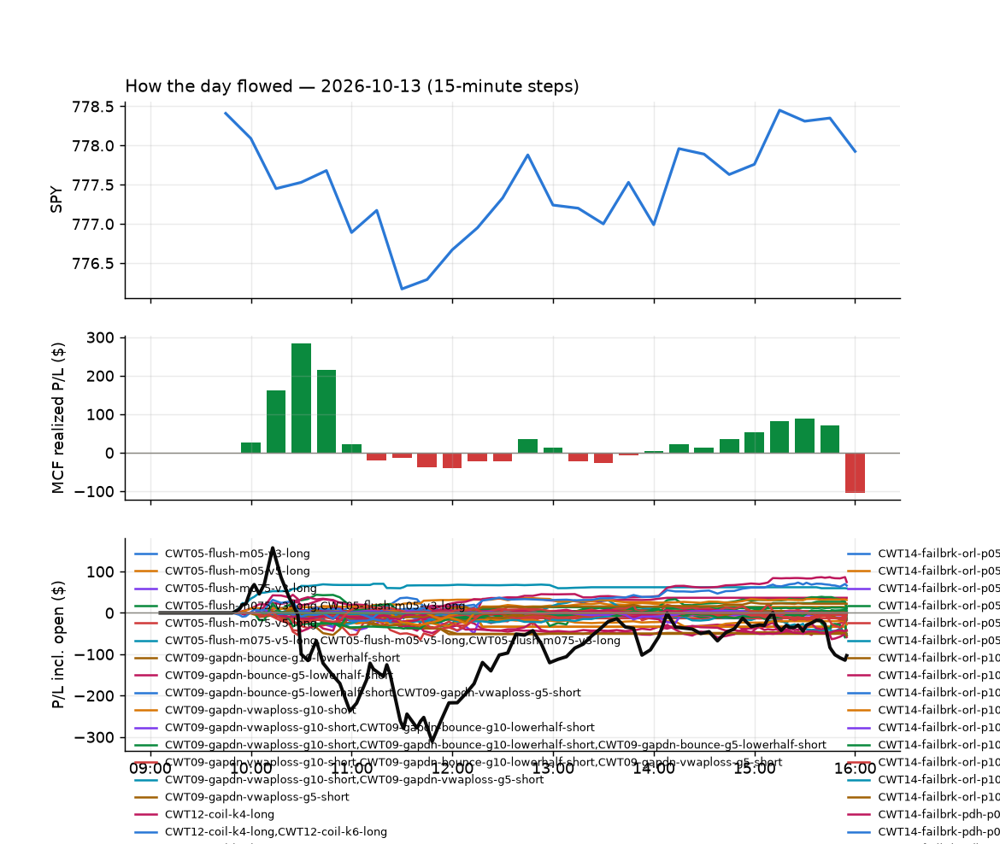

647 trades · win rate 67% · P/L $-103.27
PROBATION: no live setup has passed both locked test periods. 10 owner-directed setups added 2026-10-08 (MarcoFlow top 5 + 5 new), untested live. RW6G1 (RW6 + VWAP band guard) added 2026-10-09, probation.

| Symbol | Setup | Side | In | Out | Entry | Exit | Exit reason | % gained | P/L |
|---|---|---|---|---|---|---|---|---|---|
| S | Gap-Down Bounce Rejection Short (5% gap) (CWT09-gapdn-bounce-g5-lowerhalf-short) | short | 10:32 | 15:55 | 25.05 | 24.05 | flatten | +3.99% | $37.00 |
| BMNU | Failed Prior-Day-Low Break Long (shallow) (CWT14-failbrk-pdl-p05-long) | long | 09:57 | 10:11 | 16.21 | 16.66 | target | +2.82% | $26.07 |
| RAM | Coil Under the High (6 bars) (CWT12-coil-k6-long) | long | 11:27 | 12:30 | 10.04 | 10.28 | target | +2.39% | $22.56 |
| Symbol | Setup | Side | In | Out | Entry | Exit | Exit reason | % lost | P/L |
|---|---|---|---|---|---|---|---|---|---|
| CIFR | CWT09-gapdn-vwaploss-g10-short | short | 10:31 | 12:17 | 10.94 | 11.33 | stop | -3.56% | $-33.54 |
| CIFR | CWT09-gapdn-bounce-g10-lowerhalf-short | short | 10:31 | 12:17 | 10.94 | 11.33 | stop | -3.56% | $-33.54 |
| FCEL | CWT14-failbrk-orl-p05-long | long | 10:11 | 10:52 | 15.72 | 15.25 | stop | -2.99% | $-28.20 |
| FCEL | CWT14-failbrk-orl-p10-long | long | 10:11 | 10:52 | 15.72 | 15.25 | stop | -2.98% | $-28.14 |
| TTMI | CWT13-vwapstretch-z05-short | short | 14:57 | 15:38 | 113.13 | 115.83 | stop | -2.39% | $-21.60 |
| SNDX | CWT09-gapdn-vwaploss-g10-short | short | 10:33 | 15:55 | 13.61 | 13.92 | flatten | -2.28% | $-21.39 |
| CELC | CWT14-failbrk-orl-p05-long | long | 11:45 | 15:50 | 64.49 | 63.10 | stop | -2.16% | $-19.52 |
| SOXL | CWT09-gapdn-bounce-g5-lowerhalf-short | short | 10:33 | 12:19 | 121.33 | 123.90 | stop | -2.12% | $-17.99 |
| VKTX | CWT14-failbrk-pdl-p05-long | long | 10:07 | 10:55 | 27.90 | 27.35 | stop | -1.98% | $-18.26 |
| VKTX | CWT14-failbrk-pdl-p10-long | long | 10:07 | 10:55 | 27.89 | 27.35 | stop | -1.95% | $-17.98 |
Signal to fill: median 2s, 90th percentile 3s (647 trades). Bars close each minute; the order follows the bar close.
Best excursion (MFE): median 0.43R; worst (MAE) median 0.40R. 26% of trades never got +0.25R in our favour; 8 reached +1R and still closed at or below 0.
| Symbol | Setup | Best R | Worst R | Closed R |
|---|---|---|---|---|
| INVH | CWT14-failbrk-orl-p10-lowvol-long | +5.38 | -0.58 | +0.31 |
| NTR | CWT12-coil-k6-long | +2.67 | -1.01 | -1.01 |
| SOXL | CWT09-gapdn-vwaploss-g5-short | +2.59 | -1.02 | -0.98 |
| TZA | CWT12-coil-k6-long | +1.74 | -1.62 | -1.09 |
| EBAY | CWT12-coil-k6-long | +1.30 | -1.08 | -1.08 |
| Entry time | Trades | Win | Avg R | P/L |
|---|---|---|---|---|
| 09:50-10:30 | 329 | 69% | +0.01 | $-53.76 |
| 10:30-11:30 | 147 | 63% | -0.01 | $-74.99 |
| 11:30-13:00 | 72 | 75% | +0.14 | $34.11 |
| 13:00-14:00 | 42 | 74% | +0.14 | $39.11 |
| 14:00-16:00 | 57 | 49% | -0.06 | $-47.74 |
| Setup | Trades | Win | Avg R | Adj R (net of SPY) | P/L |
|---|---|---|---|---|---|
| Panic Flush Reversal (3x volume) (CWT05-flush-m05-v3-long) | 3.0 | 67% | +0.12 | +0.08 | $2.94 |
| Panic Flush Reversal (5x volume) (CWT05-flush-m05-v5-long) | 3.0 | 33% | -0.41 | -0.42 | $-12.93 |
| Panic Flush Reversal (deep, 3x volume) (CWT05-flush-m075-v3-long) | 5.0 | 60% | +0.03 | +0.01 | $-5.91 |
| Panic Flush Reversal (deep, 5x volume) (CWT05-flush-m075-v5-long) | 3.0 | 33% | -0.43 | -0.44 | $-13.03 |
| Gap-Down Bounce Rejection Short (10% gap) (CWT09-gapdn-bounce-g10-lowerhalf-short) | 2.0 | 0% | -0.59 | -0.58 | $-43.68 |
| Gap-Down Bounce Rejection Short (5% gap) (CWT09-gapdn-bounce-g5-lowerhalf-short) | 8.0 | 25% | -0.13 | -0.14 | $-17.34 |
| Gap-Down VWAP Loss Short (10% gap) (CWT09-gapdn-vwaploss-g10-short) | 2.0 | 0% | -0.65 | -0.65 | $-54.93 |
| Gap-Down VWAP Loss Short (5% gap) (CWT09-gapdn-vwaploss-g5-short) | 6.0 | 0% | -1.02 | -1.07 | $-50.56 |
| Coil Under the High (4 bars) (CWT12-coil-k4-long) | 32.0 | 69% | +0.00 | +0.05 | $36.53 |
| Coil Under the High (6 bars) (CWT12-coil-k6-long) | 14.0 | 36% | +0.05 | -0.00 | $14.49 |
| Spike-Pullback Flag Breakout (CWT12-flag-s1-long) | 3.0 | 33% | -0.02 | +0.04 | $-0.96 |
| Stretched Below VWAP Bounce (CWT13-vwapstretch-z05-long) | 10.0 | 70% | +0.09 | -0.03 | $5.82 |
| Stretched Above VWAP Fade (CWT13-vwapstretch-z05-short) | 12.0 | 25% | -0.40 | -0.38 | $-52.97 |
| Stretched Below VWAP Bounce (far) (CWT13-vwapstretch-z075-long) | 4.0 | 75% | +0.02 | +0.00 | $-1.65 |
| Failed Opening-Range-Low Break Long (0.05 ATR) [fill] (CWT14-failbrk-orl-p05-long) | 83.0 | 64% | -0.05 | -0.11 | $-58.58 |
| Failed Opening-Range-Low Break Long (0.05 ATR, low volume) [fill] (CWT14-failbrk-orl-p05-lowvol-long) | 80.0 | 70% | -0.00 | -0.06 | $10.45 |
| Failed Opening-Range-Low Break Long (0.1 ATR) [fill] (CWT14-failbrk-orl-p10-long) | 49.0 | 69% | -0.07 | -0.10 | $-55.06 |
| Failed Opening-Range-Low Break Long (low volume) (CWT14-failbrk-orl-p10-lowvol-long) | 50.0 | 70% | -0.03 | -0.04 | $-28.22 |
| Failed Prior-Day-High Break Short (0.05 ATR, low volume) [fill] (CWT14-failbrk-pdh-p05-lowvol-short) | 39.0 | 54% | -0.13 | -0.14 | $-41.84 |
| Failed Prior-Day-High Break Short (low volume) (CWT14-failbrk-pdh-p10-lowvol-short) | 17.0 | 76% | +0.27 | +0.24 | $31.21 |
| Failed Prior-Day-High Break Short (0.1 ATR) [fill] (CWT14-failbrk-pdh-p10-short) | 36.0 | 86% | +0.29 | +0.25 | $59.18 |
| Failed Prior-Day-Low Break Long (shallow) (CWT14-failbrk-pdl-p05-long) | 66.0 | 73% | +0.15 | +0.07 | $74.47 |
| Failed Prior-Day-Low Break Long (0.05 ATR, low volume) [fill] (CWT14-failbrk-pdl-p05-lowvol-long) | 41.0 | 71% | +0.14 | +0.06 | $11.06 |
| Failed Prior-Day-Low Break Long (CWT14-failbrk-pdl-p10-long) | 53.0 | 79% | +0.14 | +0.12 | $66.06 |
| Failed Prior-Day-Low Break Long (0.1 ATR, low volume) [fill] (CWT14-failbrk-pdl-p10-lowvol-long) | 26.0 | 81% | +0.16 | +0.14 | $22.18 |
Market direction (SPY, beta 1) accounted for $-2.34 of today's $-103.27; the rest ($-100.93) came from the setups themselves. Avg R net of SPY: -0.02 (incl. a hedge leg's cost; report only).
30 setups live today. Today: 1219 signals, 647 taken, 80 lost because another setup held the symbol (7%). Since 2026-10-12 (2 sessions): 2106 signals, 1007 taken, 430 lost to other setups (20%). Peak open positions today 196 of 400 slots. Earnings blackout removed 92 symbols before scanning.
Simulated playing time (not live): 1097 what-if trades of signals not taken, avg -0.17R, 58% winners; of them 430 lost to another setup (avg -0.20R).
Crowded out: CWT05-flush-m05-v3-long, CWT12-coil-k6-long, CWT14-failbrk-pdh-p05-lowvol-short, CWT14-failbrk-pdl-p05-long, CWT14-failbrk-orl-p05-long
| Prio | Setup | Today sig / taken | Sessions | Signals / taken / trades | Taken/day | Expected/day | Lost to other setups | Lost to (setup n) | Top skip reasons | SIMULATED: not-taken n / avg R / win | Verdict |
|---|---|---|---|---|---|---|---|---|---|---|---|
| 1 | Backside Lower-High Short (big runner) CWT04-backside-lh-a25-short | 0 / 0 | 2 | 0 / 0 / 0 | 0.00 | – | 0 | – | – | 0 / – | quiet - wait no signals in 2 session(s); too early to tell |
| 2 | Backside VWAP-Test Short (big runner) CWT04-backside-vwaptest-a25-short | 0 / 0 | 2 | 0 / 0 / 0 | 0.00 | – | 0 | – | – | 0 / – | quiet - wait no signals in 2 session(s); too early to tell |
| 3 | Gap-Down VWAP Loss Short (10% gap) CWT09-gapdn-vwaploss-g10-short | 7 / 2 | 2 | 9 / 2 / 2 | 1.00 | – | 0 | – | not shortable / shorts off 6, spread / quote / size 1 | 7 / -0.58R / 14% | slow 5.0 entries/week; ~12 weeks to 60 trades |
| 4 | Panic Flush Reversal (deep, 5x volume) CWT05-flush-m075-v5-long | 3 / 3 | 2 | 3 / 3 / 3 | 1.50 | – | 0 | – | – | 0 / – | slow 7.5 entries/week; ~8 weeks to 60 trades |
| 5 | Gap-Down Bounce Rejection Short (10% gap) CWT09-gapdn-bounce-g10-lowerhalf-short | 15 / 2 | 2 | 17 / 3 / 3 | 1.50 | – | 0 | – | not shortable / shorts off 14 | 14 / -0.97R / 0% | slow 7.5 entries/week; ~8 weeks to 60 trades |
| 6 | Backside Lower-High Short CWT04-backside-lh-a15-short | 0 / 0 | 2 | 1 / 1 / 1 | 0.50 | – | 0 | – | – | 0 / – | slow 2.5 entries/week; ~24 weeks to 60 trades |
| 7 | Panic Flush Reversal (5x volume) CWT05-flush-m05-v5-long | 3 / 3 | 2 | 4 / 3 / 3 | 1.50 | – | 1 | CWT14-failbrk-orl-p10-long 1 | symbol held by another setup 1 | 1 / +0.57R / 100% | slow 7.5 entries/week; ~8 weeks to 60 trades |
| 8 | Panic Flush Reversal (deep, 3x volume) CWT05-flush-m075-v3-long | 6 / 5 | 2 | 7 / 6 / 5 | 3.00 | – | 0 | – | broker rejected 1 | 1 / +0.34R / 100% | ok 15.0 entries/week |
| 9 | Spike-Pullback Flag Breakout CWT12-flag-s1-long | 4 / 3 | 2 | 4 / 3 / 3 | 1.50 | – | 0 | – | broker rejected 1 | 1 / -1.29R / 0% | slow 7.5 entries/week; ~8 weeks to 60 trades |
| 10 | Backside VWAP-Test Short CWT04-backside-vwaptest-a15-short | 0 / 0 | 2 | 1 / 0 / 0 | 0.00 | – | 0 | – | spread / quote / size 1 | 1 / +1.83R / 100% | slow no entries yet |
| 11 | Stretched Above VWAP Fade (far) CWT13-vwapstretch-z075-short | 0 / 0 | 2 | 0 / 0 / 0 | 0.00 | – | 0 | – | – | 0 / – | quiet - wait no signals in 2 session(s); too early to tell |
| 12 | Gap-Down VWAP Loss Short (5% gap) CWT09-gapdn-vwaploss-g5-short | 22 / 6 | 2 | 38 / 6 / 6 | 3.00 | – | 0 | – | not shortable / shorts off 27, spread / quote / size 5 | 32 / -0.77R / 12% | ok 15.0 entries/week |
| 13 | Panic Flush Reversal (3x volume) CWT05-flush-m05-v3-long | 7 / 3 | 2 | 10 / 4 / 4 | 2.00 | – | 5 | CWT05-flush-m075-v3-long 4, CWT05-flush-m075-v5-long 3, CWT05-flush-m05-v5-long 3 | symbol held by another setup 5, broker rejected 1 | 6 / +0.08R / 67% | crowded-out 5 of 10 signals (50%) lost to setups already holding the symbol |
| 14 | Gap-Down Bounce Rejection Short (5% gap) CWT09-gapdn-bounce-g5-lowerhalf-short | 39 / 8 | 2 | 50 / 8 / 8 | 4.00 | – | 2 | CWT09-gapdn-bounce-g10-lowerhalf-short 2, CWT09-gapdn-vwaploss-g10-short 1, CWT09-gapdn-vwaploss-g5-short 1 | not shortable / shorts off 37, spread / quote / size 3, symbol held by another setup 2 | 42 / -0.63R / 24% | ok 20.0 entries/week |
| 15 | Stretched Below VWAP Bounce (far) CWT13-vwapstretch-z075-long | 5 / 4 | 2 | 5 / 4 / 4 | 2.00 | – | 0 | – | spread / quote / size 1 | 1 / +0.71R / 100% | slow 10.0 entries/week; ~6 weeks to 60 trades |
| 16 | Stretched Above VWAP Fade CWT13-vwapstretch-z05-short | 13 / 12 | 2 | 18 / 17 / 17 | 8.50 | – | 0 | – | not shortable / shorts off 1 | 1 / -1.17R / 0% | ok 42.5 entries/week |
| 17 | Coil Under the High (6 bars) CWT12-coil-k6-long | 21 / 14 | 2 | 57 / 24 / 24 | 12.00 | – | 20 | CWT12-coil-k4-long 18, CWT14-failbrk-orl-p05-lowvol-long 1, CWT14-failbrk-orl-p05-long 1 | symbol held by another setup 20, spread / quote / size 13 | 33 / -0.76R / 15% | crowded-out 20 of 57 signals (35%) lost to setups already holding the symbol |
| 18 | Stretched Below VWAP Bounce CWT13-vwapstretch-z05-long | 11 / 10 | 2 | 15 / 14 / 14 | 7.00 | – | 0 | – | spread / quote / size 1 | 1 / +0.47R / 100% | ok 35.0 entries/week |
| 19 | Failed Prior-Day-High Break Short (low volume) CWT14-failbrk-pdh-p10-lowvol-short | 20 / 17 | 2 | 49 / 34 / 34 | 17.00 | – | 6 | CWT14-failbrk-pdh-p10-short 2, CWT14-failbrk-pdh-p05-lowvol-short 2, CWT14-failbrk-orl-p10-lowvol-long 1 | spread / quote / size 8, symbol held by another setup 6, not shortable / shorts off 1 | 15 / -0.28R / 47% | ok 85.0 entries/week |
| 20 | Failed Prior-Day-Low Break Long (0.1 ATR, low volume) [fill] CWT14-failbrk-pdl-p10-lowvol-long | 33 / 26 | 2 | 50 / 36 / 34 | 18.00 | – | 6 | CWT14-failbrk-pdl-p10-long 3, CWT14-failbrk-pdl-p05-lowvol-long 2, CWT09-gapdn-bounce-g5-lowerhalf-short 1 | spread / quote / size 8, symbol held by another setup 6 | 14 / -0.13R / 64% | ok 90.0 entries/week |
| 21 | Failed Prior-Day-High Break Short (0.1 ATR) [fill] CWT14-failbrk-pdh-p10-short | 55 / 36 | 2 | 109 / 58 / 58 | 29.00 | – | 23 | CWT14-failbrk-pdh-p10-lowvol-short 19, CWT14-failbrk-pdh-p05-lowvol-short 2, CWT14-failbrk-orl-p10-lowvol-long 1 | spread / quote / size 24, symbol held by another setup 23, not shortable / shorts off 4 | 51 / -0.07R / 65% | ok 145.0 entries/week |
| 22 | Failed Opening-Range-Low Break Long (low volume) CWT14-failbrk-orl-p10-lowvol-long | 88 / 50 | 2 | 136 / 86 / 84 | 43.00 | – | 10 | CWT14-failbrk-pdl-p10-lowvol-long 3, CWT14-failbrk-orl-p05-lowvol-long 3, CWT14-failbrk-orl-p05-long 2 | spread / quote / size 21, per-setup cap 13, symbol held by another setup 10 | 50 / +0.06R / 74% | ok 215.0 entries/week |
| 23 | Failed Prior-Day-Low Break Long CWT14-failbrk-pdl-p10-long | 67 / 53 | 2 | 98 / 64 / 64 | 32.00 | – | 19 | CWT14-failbrk-pdl-p10-lowvol-long 15, CWT14-failbrk-pdl-p05-lowvol-long 4, CWT14-failbrk-pdl-p05-long 2 | symbol held by another setup 19, spread / quote / size 14, broker rejected 1 | 34 / -0.14R / 59% | ok 160.0 entries/week |
| 24 | Failed Opening-Range-Low Break Long (0.1 ATR) [fill] CWT14-failbrk-orl-p10-long | 116 / 49 | 2 | 187 / 72 / 68 | 36.00 | – | 44 | CWT14-failbrk-orl-p10-lowvol-long 35, CWT14-failbrk-orl-p05-lowvol-long 5, CWT14-failbrk-pdl-p10-lowvol-long 4 | symbol held by another setup 44, per-setup cap 40, spread / quote / size 21 | 114 / -0.03R / 69% | ok 180.0 entries/week |
| 25 | Failed Prior-Day-High Break Short (0.05 ATR, low volume) [fill] CWT14-failbrk-pdh-p05-lowvol-short | 53 / 39 | 2 | 117 / 66 / 65 | 33.00 | – | 30 | CWT14-failbrk-pdh-p10-lowvol-short 21, CWT14-failbrk-pdh-p10-short 3, CWT14-failbrk-orl-p05-lowvol-long 3 | symbol held by another setup 30, spread / quote / size 19, not shortable / shorts off 2 | 51 / -0.08R / 67% | crowded-out 30 of 117 signals (26%) lost to setups already holding the symbol |
| 26 | Failed Prior-Day-Low Break Long (0.05 ATR, low volume) [fill] CWT14-failbrk-pdl-p05-lowvol-long | 63 / 41 | 2 | 112 / 73 / 69 | 36.50 | – | 18 | CWT14-failbrk-pdl-p10-lowvol-long 10, CWT14-failbrk-pdl-p10-long 6, CWT14-failbrk-pdl-p05-long 3 | spread / quote / size 21, symbol held by another setup 18 | 39 / -0.10R / 62% | ok 182.5 entries/week |
| 27 | Coil Under the High (4 bars) CWT12-coil-k4-long | 39 / 32 | 2 | 128 / 76 / 72 | 38.00 | – | 2 | CWT14-failbrk-pdl-p05-lowvol-long 1, CWT14-failbrk-pdl-p10-lowvol-long 1 | per-setup cap 41, spread / quote / size 9, symbol held by another setup 2 | 52 / -0.02R / 64% | ok 190.0 entries/week |
| 28 | Failed Prior-Day-Low Break Long (shallow) CWT14-failbrk-pdl-p05-long | 112 / 66 | 2 | 187 / 82 / 82 | 41.00 | – | 68 | CWT14-failbrk-pdl-p05-lowvol-long 39, CWT14-failbrk-pdl-p10-long 26, CWT14-failbrk-pdl-p10-lowvol-long 19 | symbol held by another setup 68, spread / quote / size 36, broker rejected 1 | 105 / -0.14R / 61% | crowded-out 68 of 187 signals (36%) lost to setups already holding the symbol |
| 29 | Failed Opening-Range-Low Break Long (0.05 ATR, low volume) [fill] CWT14-failbrk-orl-p05-lowvol-long | 172 / 80 | 2 | 282 / 134 / 132 | 67.00 | – | 51 | CWT14-failbrk-orl-p10-lowvol-long 24, CWT14-failbrk-orl-p05-long 9, CWT14-failbrk-orl-p10-long 7 | per-setup cap 61, symbol held by another setup 51, spread / quote / size 30 | 148 / -0.07R / 66% | ok 335.0 entries/week |
| 30 | Failed Opening-Range-Low Break Long (0.05 ATR) [fill] CWT14-failbrk-orl-p05-long | 245 / 83 | 2 | 412 / 128 / 124 | 64.00 | – | 125 | CWT14-failbrk-orl-p05-lowvol-long 66, CWT14-failbrk-orl-p10-lowvol-long 41, CWT14-failbrk-orl-p10-long 37 | symbol held by another setup 125, per-setup cap 110, spread / quote / size 40 | 283 / -0.18R / 58% | crowded-out 125 of 412 signals (30%) lost to setups already holding the symbol |
Every trade is attached as a CSV you can open and edit in Excel or Google Sheets. Live page: https://misiti15.github.io/MCF/live/